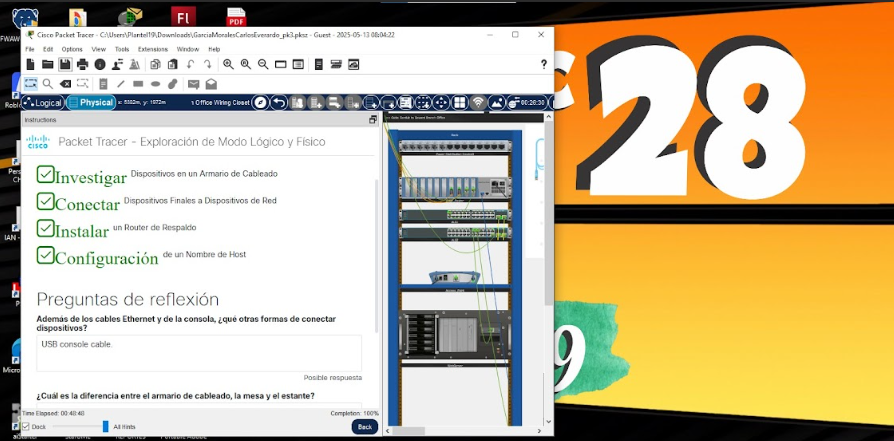

Virtual Box y Instagram
Este módulo parece dificil, pero los trabajos no son complicados, lo unico que necesitas para pasar este modulo es leer bien.
Comunidades Virtuales
En este submódulo te van a enseñar sobre como se puede usar las redes sociales para promocionar tu trabajo y trabajar como Freelancer, tambien aprenderas a como las empresas usan estas herramientas para promocionarse.
Mantenimiento y Redes
En este submódulo deberas de leer de manera correcta para poder hacer los trabajos, no son nada complicados pero deberas poner atención a las instrucciones para hacer las tareas de manera correcta.
Máquinas Virtuales:
Este tema es el mas entretenido en mi opinion, es muy facil de hacer maquinas virtuales, talvez saldran algunos problemas al iniciar el sistema, pero son faciles de arreglarlos, ademas de que pueden servir para probar alguna aplicación que no quieras instalar en tu computadora.


